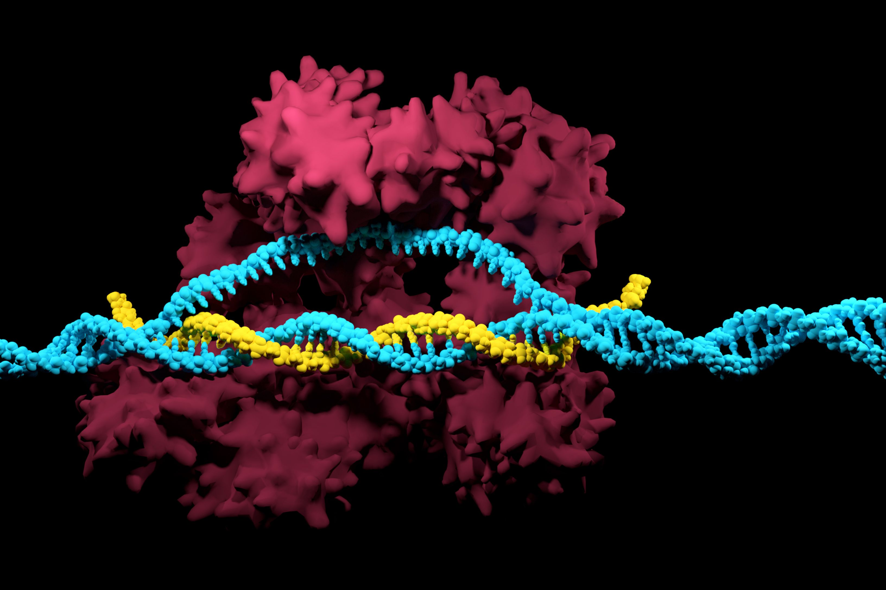

Historical Breakthroughs
Expand Your Science Knowledge With Historical Discoveries
Home
News
Historical Figures
Historical Breakthroughs
Filter
Select All
Physics
Chemistry
Space
Engineering
Biology
Mathematics
Astronomy
Geology
Computer Science
Environmental Science
Psychology
Manhattan Project: The Atomic Bomb
Learn about the secret World War II project that developed the first nuclear weapons.
Physics
History

CRISPR: Gene Editing Revolution
Explore how CRISPR technology has revolutionized genetic engineering and biotechnology.
Biology
Genetics
Apollo Program: Moon Landing
Discover the historic mission that landed humans on the moon for the first time.
Space
History
Human Genome Project: Decoding DNA
Learn about the international effort to map and sequence the entire human genome.
Biology